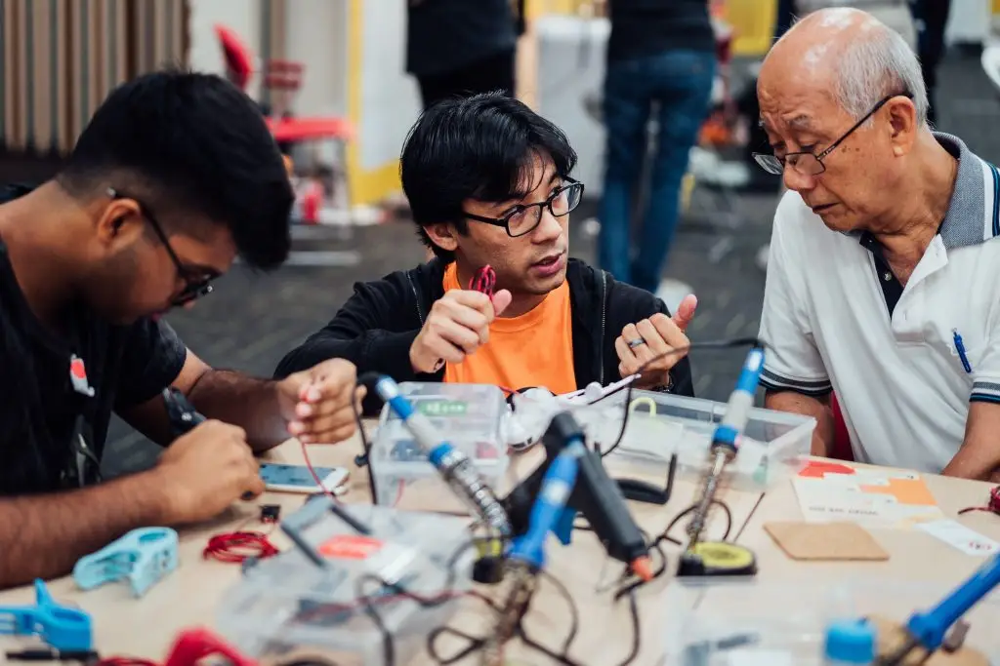
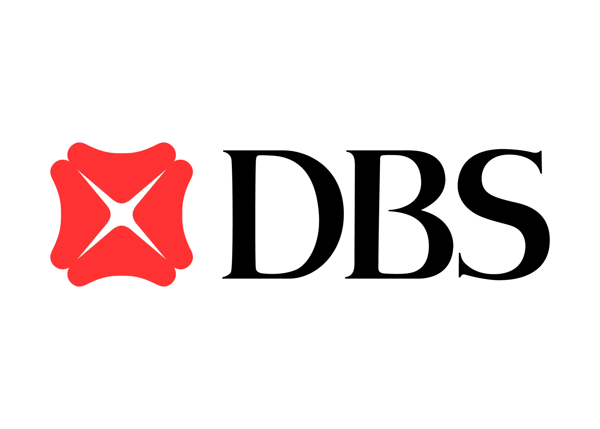
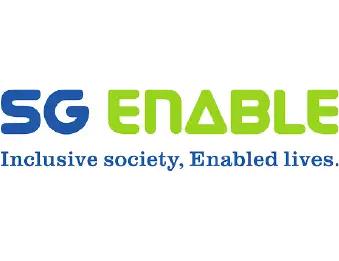
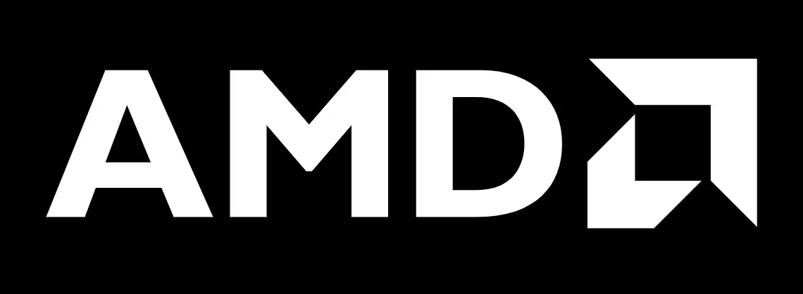
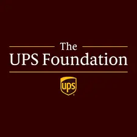
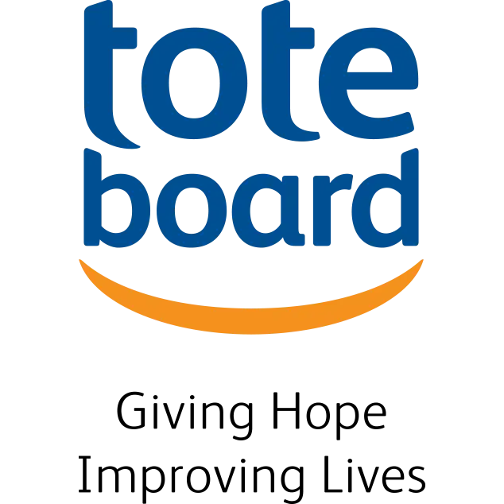

Our Work
Assistive Technology
For people without disabilities, technology makes things easier. For people with disabilities, technology makes things possible.
We create affordable, open-source solutions that cater to diverse needs. Using readily available materials and inventive “hacks,” we transform everyday objects into assistive devices.
Discover our flagship AT programs:

Bespoke Projects
Discover some of our open-source prototypes! <3 Read Moretech For Good Festival
Join Singapore's exclusive assistive technology festival and showcase of open-source prototypes. Read More Assistive Devices Distributed 0 Community Partners 0FEATURED
Bespoke Projects
All Projects GoBabyGo! SingaporeFlag Raising MechanismAdapted Radio ControllerMounting SystemOUR ANNUAL
Tech For Good Festival
T4G is our annual Singapore festival where youth innovators, STEM mentors, and the disability community gather to build open-source solutions.
Read Moresome of our strong supporters for our programmes...






